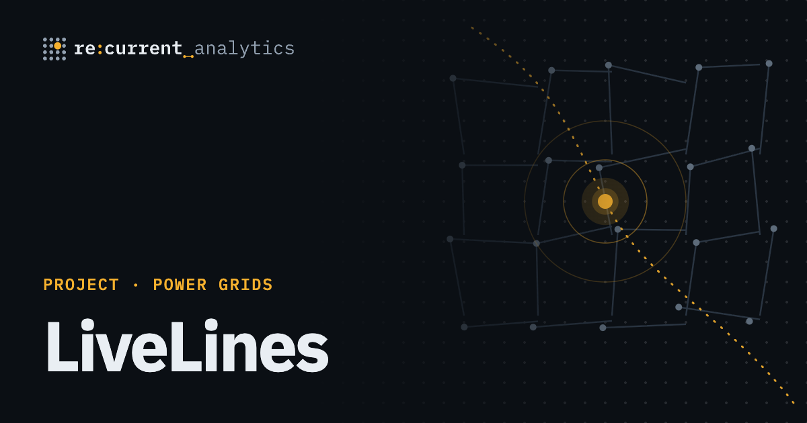
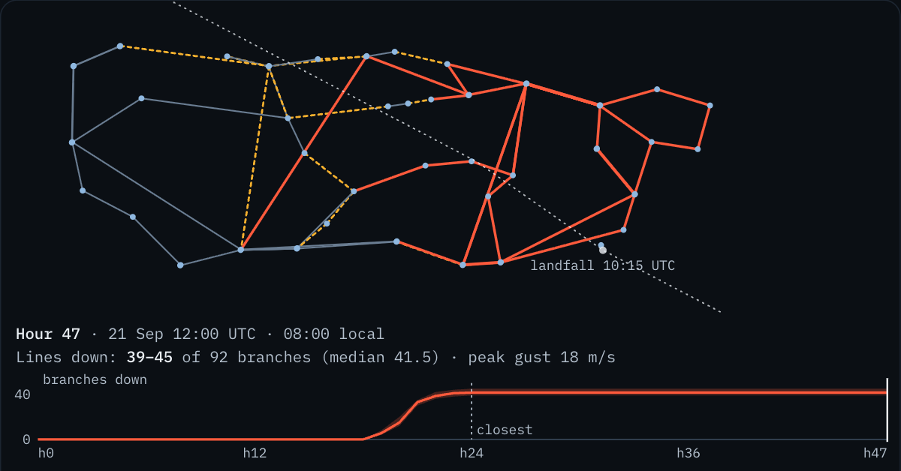
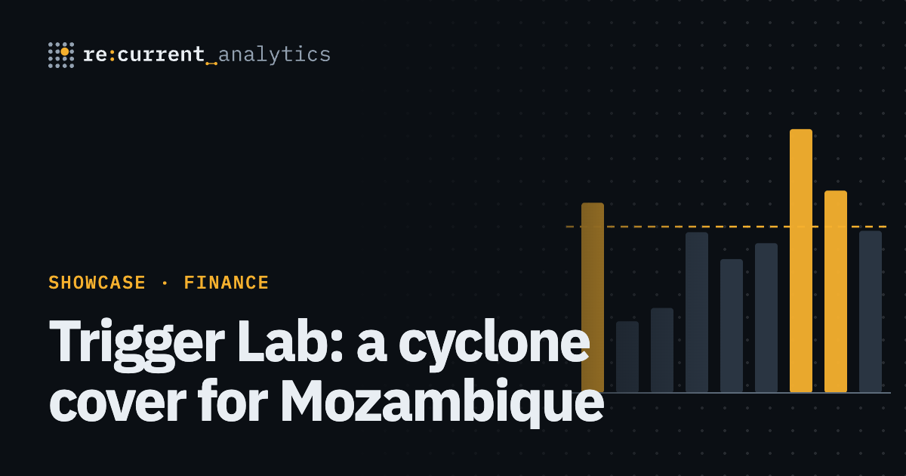
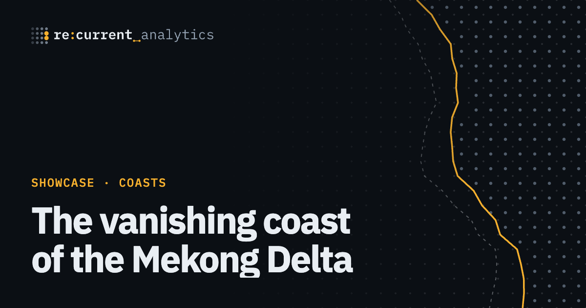
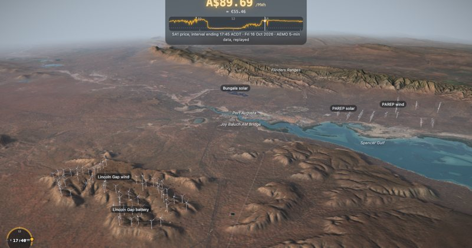
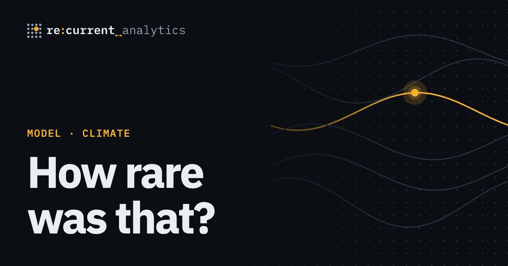
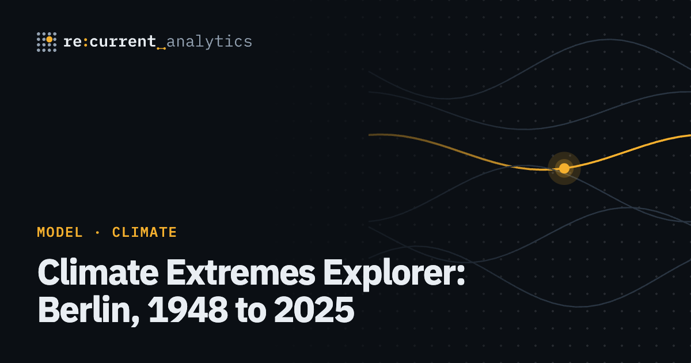
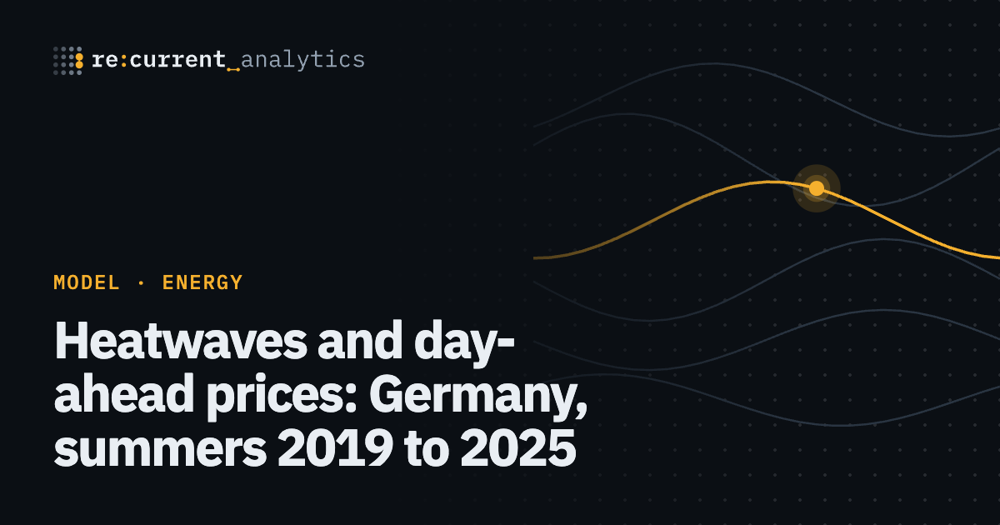
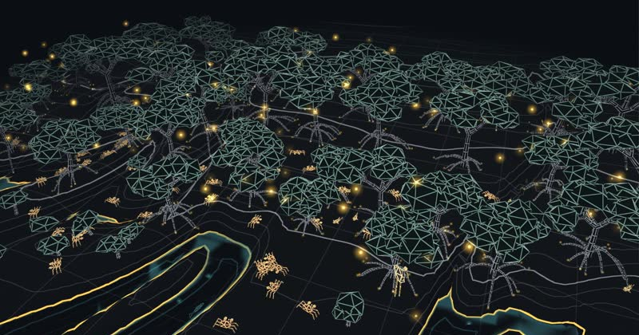

A seagull, a butterfly, a flood
James Gleick’s books, from Chaos to The Telephone: science told through the people who did it.
re:current_analytics
I build open, reproducible models of how extreme weather hits power grids, water and the infrastructure in between, and learn in public how such models can inform decisions.
A working notebook: what I can already build, and what I'm still learning.
Behind this page: real wind, 10 m above the ground, from NOAA GFS, processed. Now and then a made-up storm crosses the page.
Energy and grids
How storms and heat take down lines, and who keeps supply.
LiveLines · Hurricane Maria · Port Augusta · Heatwaves and prices
Food and agriculture
Heat and drought where crops are grown. Nothing published yet.
Risk and decisions
From hazard data to triggers, budgets and early action.
Each card says how far the work is checked: against what really happened, built on measured data, or a toy.

Flagship · tool
What a storm does to a power grid, hour by hour, line by line. An open method: every value shows its source or says it is a placeholder.
In development · checked against observations

Showcase
A storm crosses the grid hour by hour, lines fail. Then the model meets the satellite: what it gets right, what it misses, and why.
Checked against observations

Showcase
Design a parametric cyclone trigger for Mozambique over the historical tracks, and see its basis risk.
Measured data

Showcase
A coastline in retreat seen from space, what drives it, and the choice between dykes and mangroves.
Measured data

Showcase
A small 3D Port Augusta in South Australia: two solar farms, two wind farms and a battery follow one real day of AEMO 5-minute data.
Measured data

Model
Pick a place and a day. See how often a day like it came around 1961 to 1990, and how often in the last 30 years.
Measured data

Model
78 years of measured heat and rain in Berlin: set your own heatwave and see what changed.
Measured data

Model
Seven summers of measured heat against day-ahead electricity prices in Germany and Luxembourg.
Measured data

Playground
A mangrove coast, a fire in Hannover's city forest and a forecast game. Toys, not models: the rules are made up.
Toy
Open to roles in research, public institutions, utilities and international organisations. Transparent methods, reproducible analysis, and I'll tell you what we don't know.
Flagship · LiveLines
Any recorded tropical cyclone, wherever OpenStreetMap maps the power lines: which lines are likely to fail, hour by hour. Where a grid model exists, so far for the Philippines, Puerto Rico and Mozambique, it goes on to where the power goes and who keeps supply. One calculation, seen at three depths; change a knob at one and the others follow.
LiveLines is built for a bigger screen. On a phone, try landscape mode and open one panel at a time.
No physical number is typed into the code. Each lives in one evidence file with its unit, its source and its status, and the app links every value to that entry. Values without a source are not hidden: they are marked as placeholders, and the results that read them say so.
Nearly eight years of development cooperation, most of them in Asia, taught me that risk is people, institutions and money; parametric risk transfer taught me how hazard data becomes a decision. Now I build open models of climate risk, and this site is where I think in public.
This site is a working notebook.
I use it to think in public about climate risk, hazards, and systems under stress.
The notes here are not polished conclusions. They are intermediate objects: models, sketches, assumptions, failures, and partial results.
I am interested in where quantitative methods meet institutional reality, especially where uncertainty, incentives, and governance interact.
I do not treat models as neutral. I treat them as situated tools that encode choices, values, and blind spots.
Clarity matters more than novelty. Reproducibility matters more than rhetoric.
This site is incomplete by design.
It does not claim to have answers. It does not promise insight, impact, or innovation.
There is no thought leadership here. No frameworks. No "key takeaways."
The work here is not optimised for legibility. It is not designed to reassure.
If something looks unfinished, it probably is. If something looks wrong, it might be.
This site rejects polish as a proxy for rigour.
Books, films, music and art that run underneath the work.
Every page of this site and the links between them. Tap or click the map to explore it. With a keyboard, press g on any page to open it again.